Showcase #1- Santa Maria
Dávám sem na čumendu model lodi Santa Maria z ABC. Dalo mi to trochu víc práce než obvykle. Ale mrzí mě, že jsem tak trochu zapomněl na retušování a když jsem to zkoušel retušovat po slepení, tak jsem se na některá místa prostě nemohl dostat a proto to tak "svítí". Ale tak na poličku dobrý.
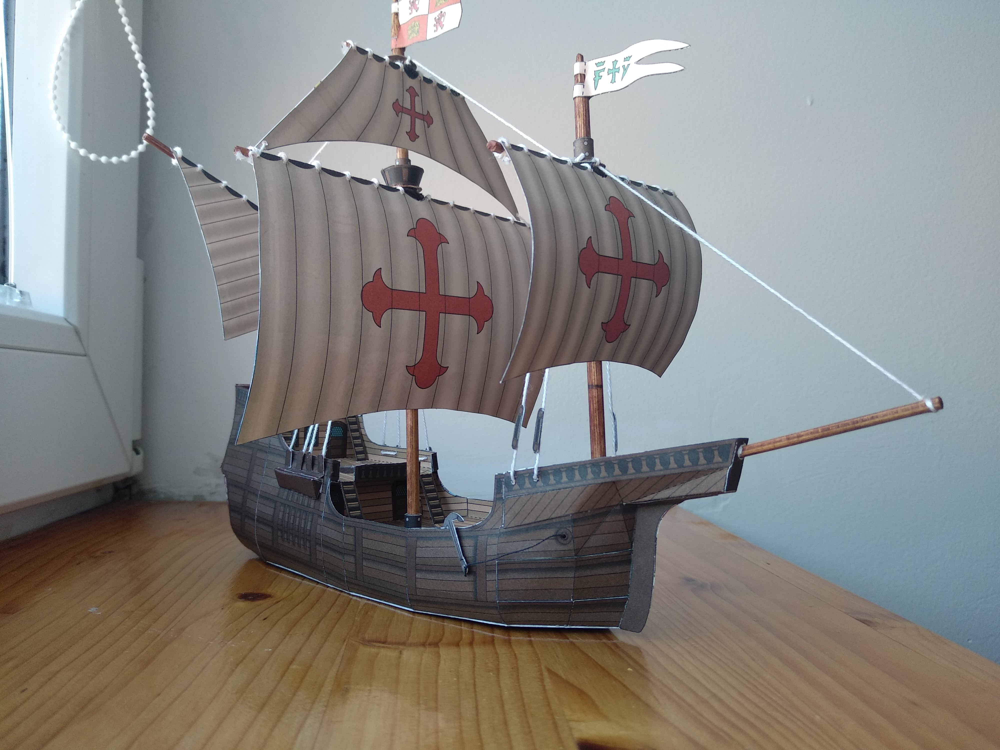 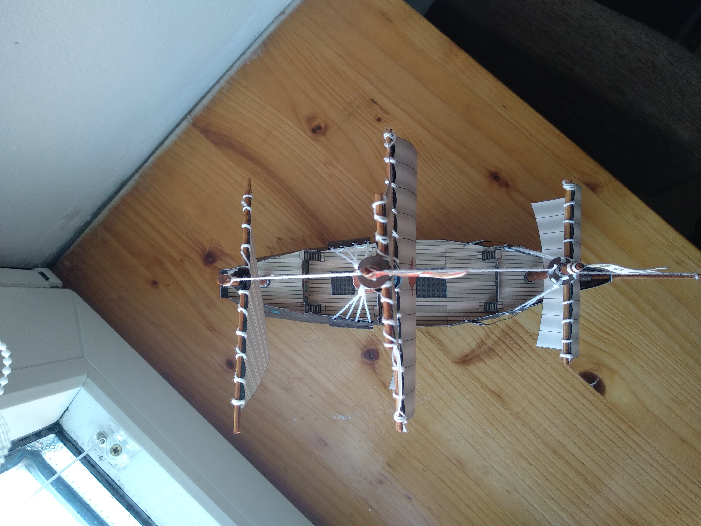
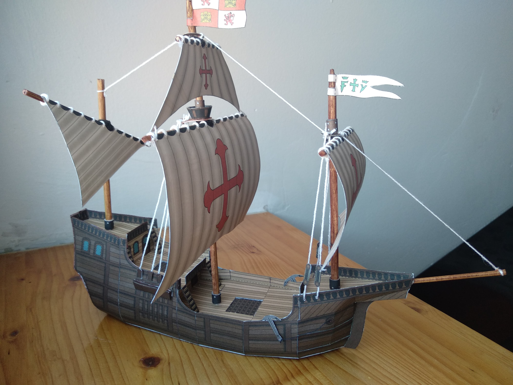
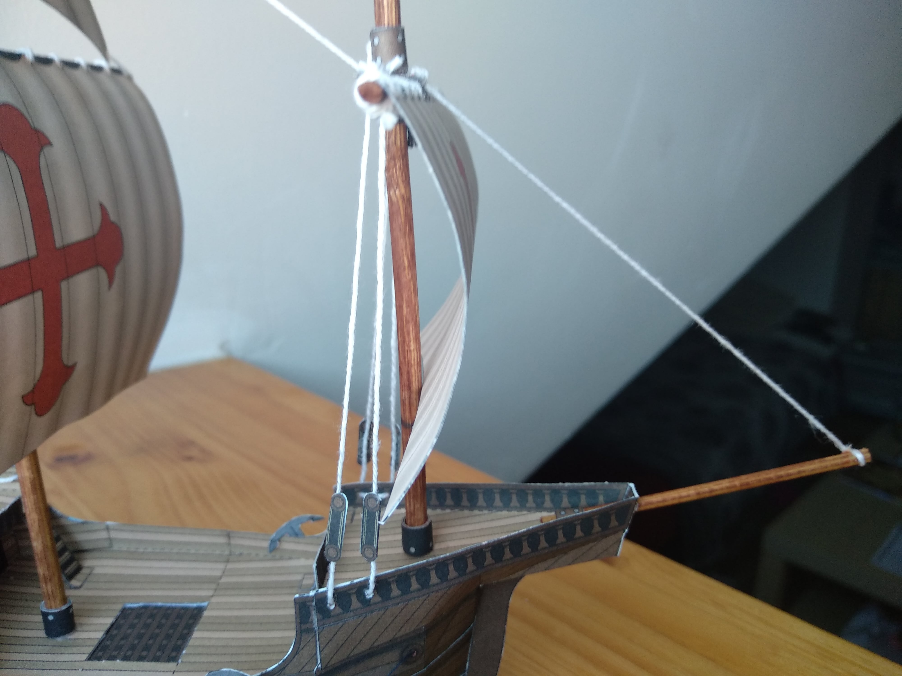
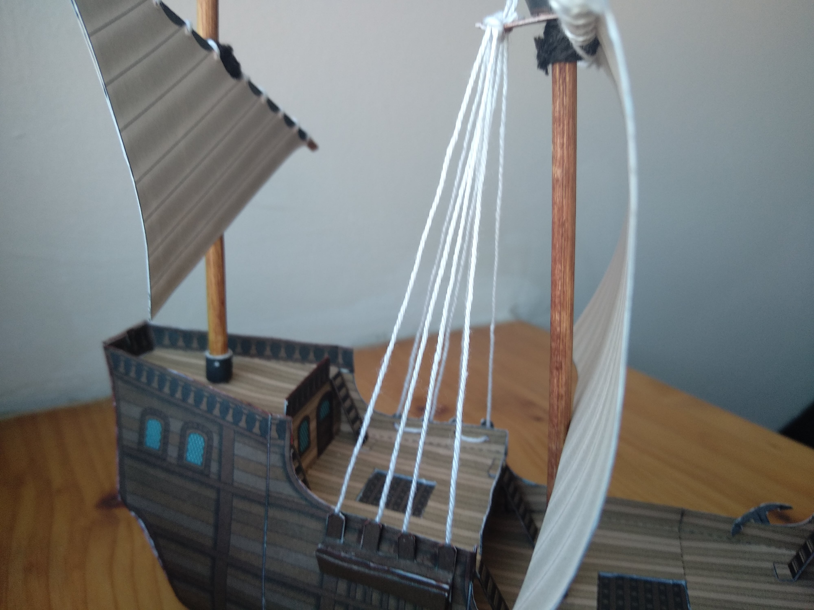
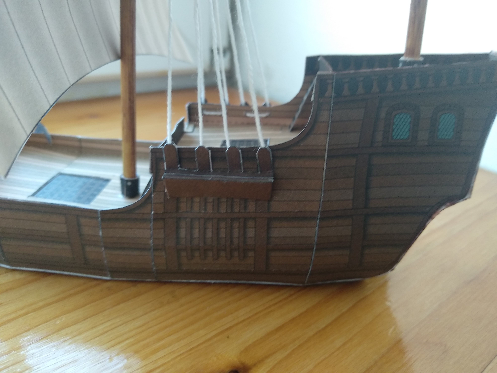
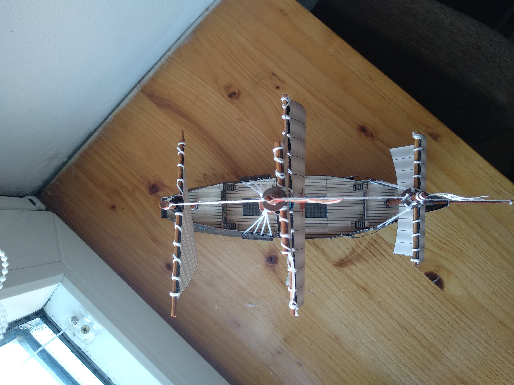
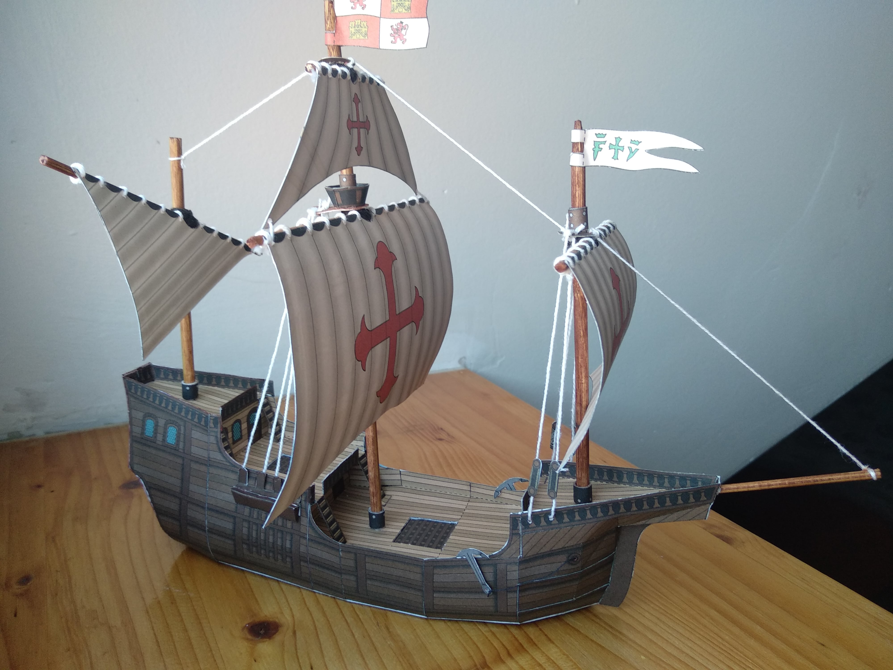
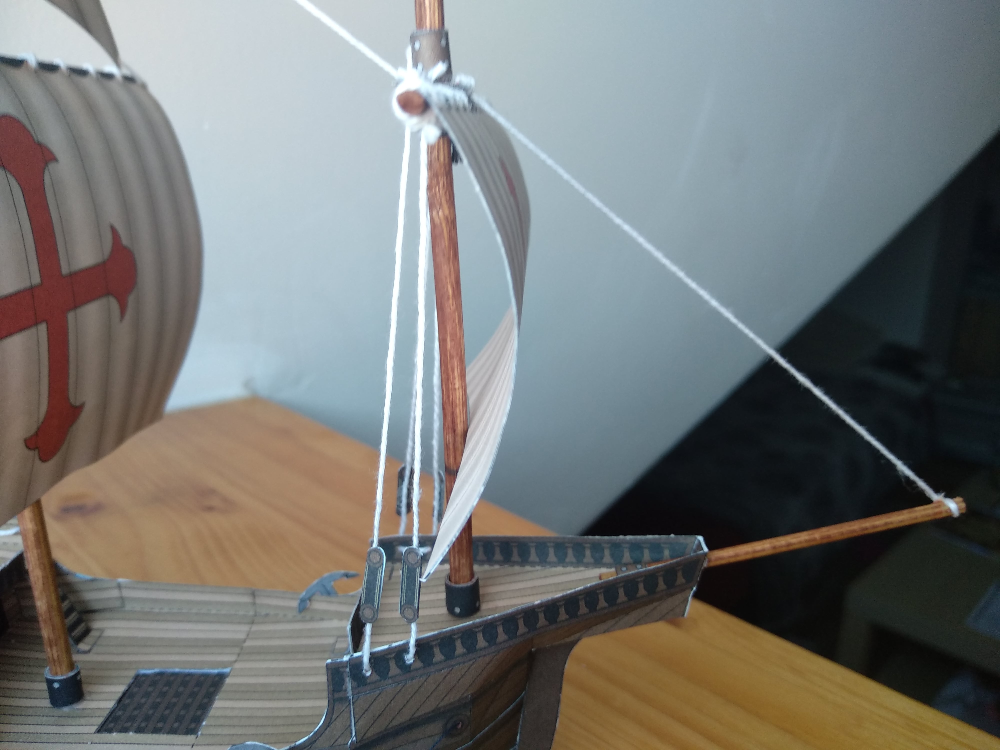
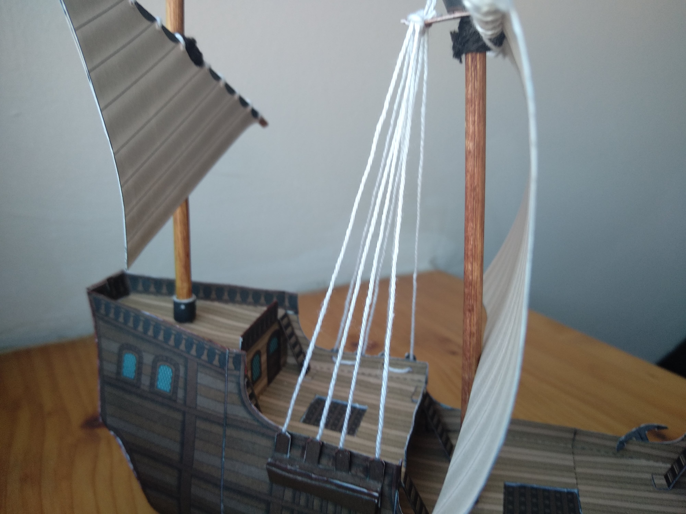
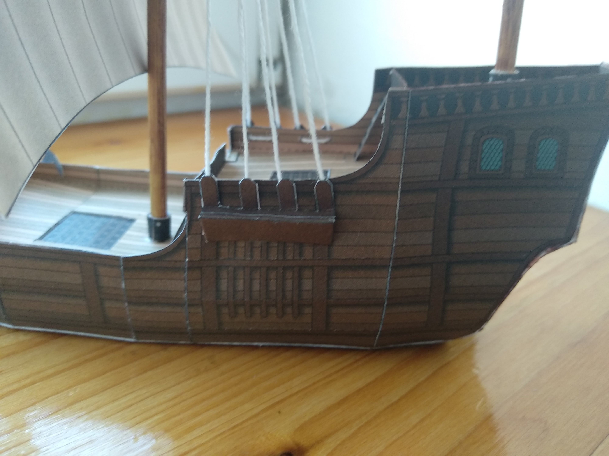